AnestICU
Doses, infusões e condutas de Anestesia e UTI em segundos.
Digite o peso e o app calcula. Protocolos, calculadoras, escores e USG/POCUS para consultar no plantão e estudar depois, mesmo sem internet.

- 14 dias grátis
- Cancele quando quiser
- Funciona offline
*O conteúdo clínico funciona sem internet. A assinatura é verificada online periodicamente.
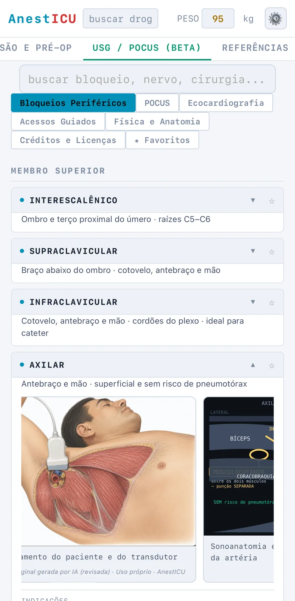
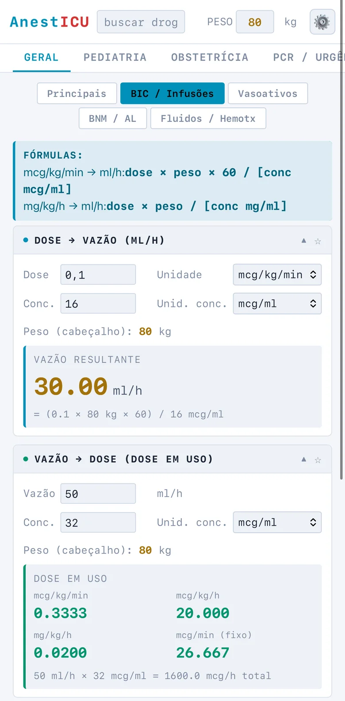
Consulte em 20 segundos. Estude quando quiser.
O mesmo app que resolve a dúvida na beira do leito serve para revisar o assunto depois, com calma.
A conta pronta antes da indução
- Doses e vazões calculadas pelo peso do paciente
- Indução, sequência rápida, via aérea difícil
- Pediatria, obstetrícia e cirurgia cardíaca
- O que suspender no pré-operatório
Conduta à mão quando o tempo é curto
- Vasoativos e infusões contínuas em ml/h
- PCR, choque, sepse e hemorragia
- Gasometria interpretada passo a passo
- Escores, ventilação mecânica e eletrólitos
Um resumo organizado para revisar
- Bloqueios e POCUS com ilustrações e sonoanatomia
- Algoritmos em etapas, do pré-anestésico à alta
- Fórmulas à mostra em cada calculadora
- Favoritos para montar sua lista de revisão
Tudo que você consulta no plantão, em um só app
Do centro cirúrgico à UTI, passando pela emergência — organizado para ser encontrado em segundos.
Protocolos
Condutas passo a passo para as situações mais frequentes do dia a dia.
Calculadoras
Doses, escores e conversões calculados na hora, sem margem para erro manual.
Infusões
Cálculo rápido de taxas de infusão contínua por peso e concentração.
Medicamentos
Doses, diluições e observações práticas dos fármacos mais usados.
Anestesia Obstétrica
Particularidades da gestante, do parto e das urgências obstétricas.
Pediatria
Doses por peso, fita de Broselow e condutas específicas para crianças.
Via Aérea
Algoritmos de via aérea difícil e sequência rápida de intubação.
USG / POCUS
Bloqueios periféricos, POCUS pulmonar e gástrico, ecocardiografia e acessos guiados, com imagens e esquemas (beta).
Hemoterapia
Indicações e condutas transfusionais para o sangramento agudo.
Gasometria
Interpretação em cascata e comparação arterial × venosa passo a passo.
ROTEM
Leitura da tromboelastometria e sua correlação com a coagulação.
PCR
Algoritmo de suporte avançado de vida com tempos e doses em destaque.
Choque
Diferenciação e condutas para os principais tipos de choque circulatório.
Ventilação Mecânica
Parâmetros iniciais, ajustes e estratégias protetoras por perfil de paciente.
Terapia Intensiva
Escores, sedação, monitorização e condutas do dia a dia da UTI.
Suspensão e Pré-op
O que suspender, quando suspender e a avaliação pré-anestésica em etapas.
Busca inteligente
Encontre pelo princípio ativo ou pelo nome comercial e vá direto ao card.
Favoritos e ajustes
Salve seus cards, escolha tema claro ou escuro e use em português, espanhol ou inglês.
Atualizações frequentes
Conteúdo revisado continuamente com base em literatura e diretrizes atuais.
Modo offline
A maior parte do conteúdo funciona sem qualquer conexão com a internet.
O aplicativo em ação
Telas reais da versão atual, no tema claro. O tema escuro continua disponível nos ajustes.
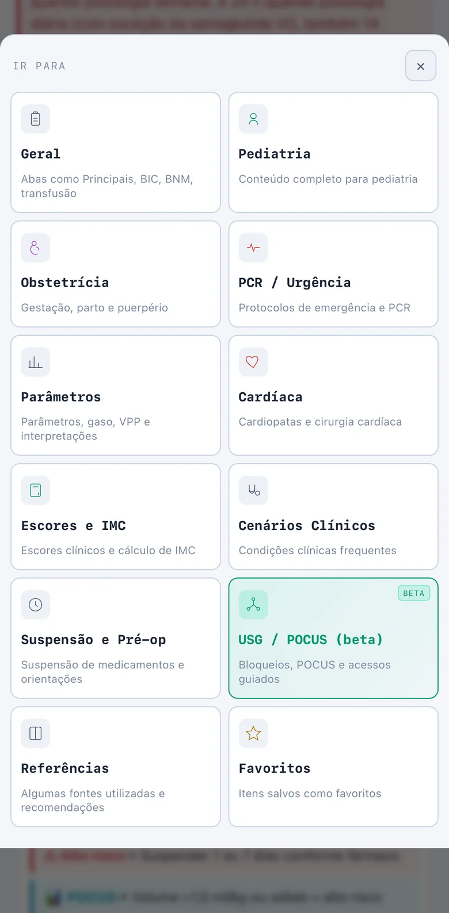
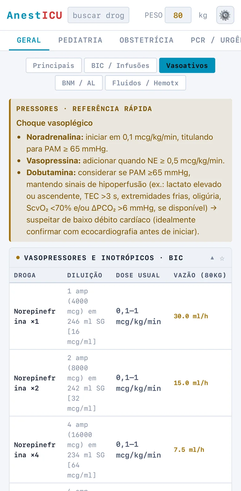
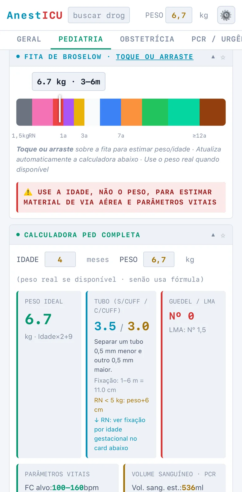
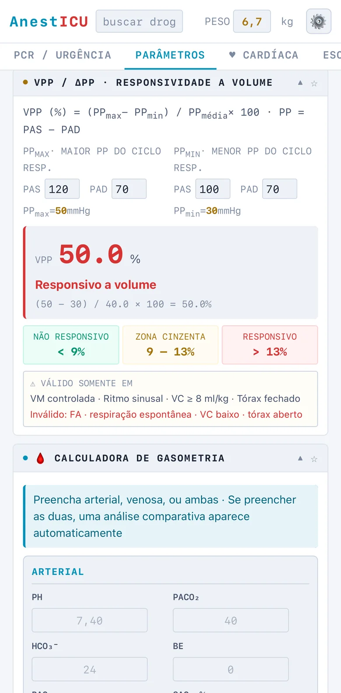
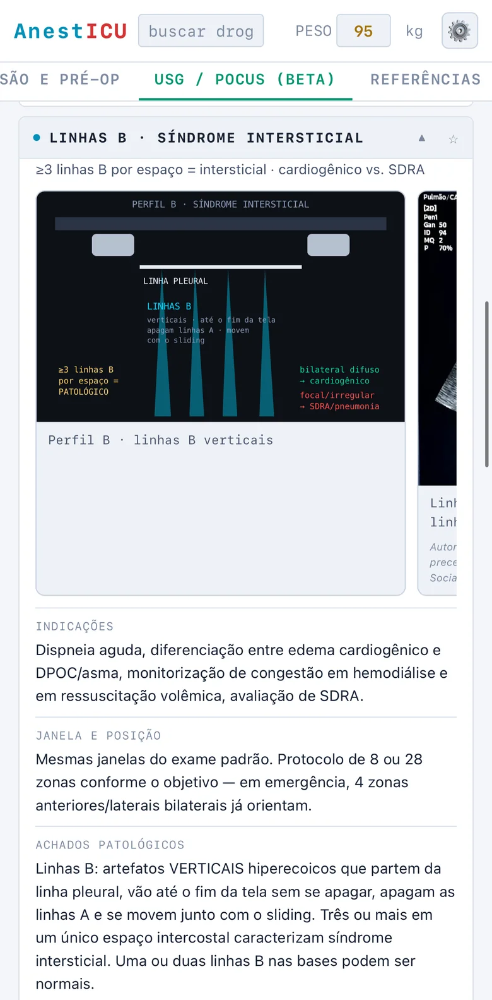
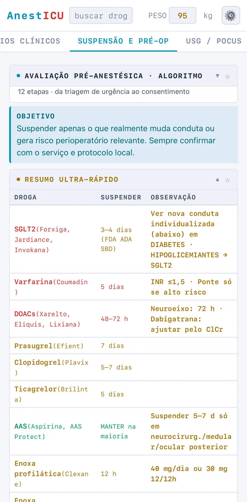
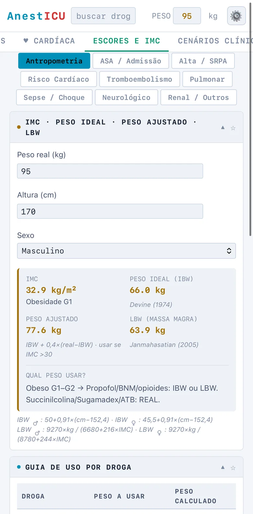
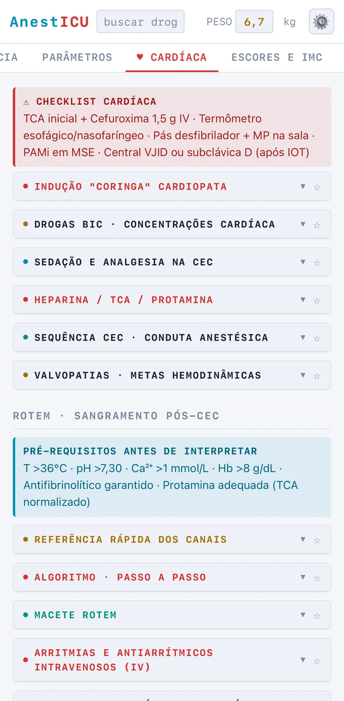
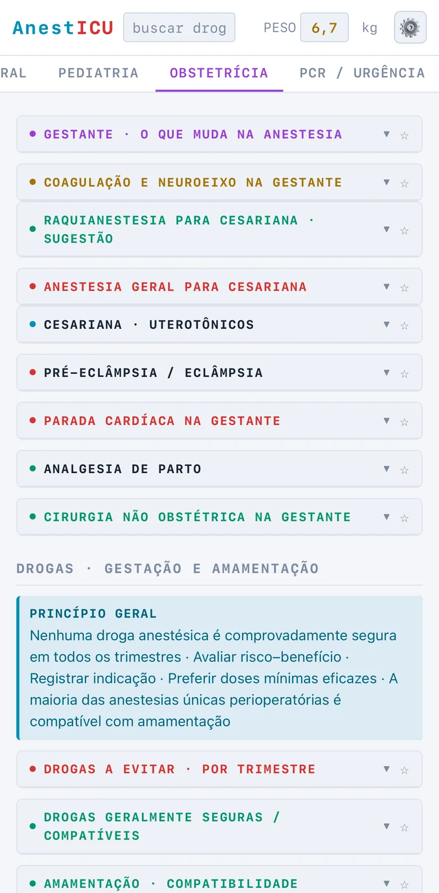
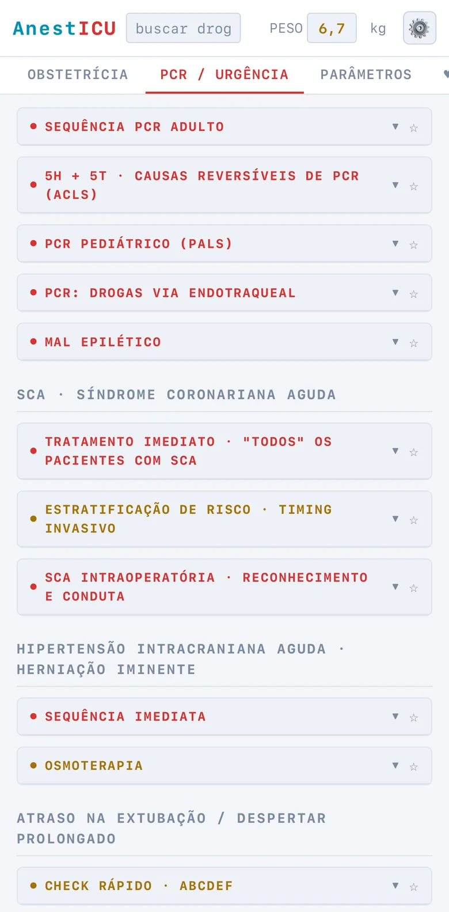
Do download ao primeiro cálculo em 1 minuto
-
1
Baixe o app
Na App Store ou no Google Play, direto no seu aparelho.
-
2
Ative os 14 dias grátis
Escolha o plano mensal ou anual. Você só paga depois do período de teste.
-
3
Digite o peso e use
Doses, vazões e escores já saem calculados. Funciona sem internet.
Desenvolvido por UM anestesiologista para anestesiologistas.
O AnestICU nasceu da necessidade de reunir em um único aplicativo as informações mais utilizadas durante a prática clínica diária.
Todo o conteúdo é continuamente revisado e atualizado com base em literatura científica, diretrizes internacionais e experiência clínica.
Você vai usar por 20 segundos, mas várias vezes por dia e em todos os plantões!
Aviso importante
O AnestICU é uma ferramenta educacional e de apoio à decisão clínica.
O aplicativo não substitui o julgamento médico, protocolos institucionais ou diretrizes locais. Toda decisão clínica permanece sob responsabilidade do profissional assistente.
Teste o AnestICU grátis por 14 dias
Leve para o próximo plantão e veja se ele economiza o seu tempo. Se não fizer sentido, cancele antes do fim do teste e não pague nada.
Os valores aparecem na loja, na sua moeda. Pagamento processado pela App Store ou pelo Google Play. Cancele quando quiser.
Perguntas frequentes
Como funciona o teste grátis?
Ao assinar o plano mensal ou anual pela loja, novos assinantes ganham 14 dias grátis. A cobrança só acontece no fim do período. Se cancelar antes, você não paga nada.
Como eu cancelo?
Direto nas assinaturas da App Store ou do Google Play, em poucos toques. Não precisa falar com ninguém.
Funciona sem internet?
Sim. O conteúdo clínico fica no aparelho e funciona offline, inclusive no centro cirúrgico sem sinal. A assinatura é verificada online periodicamente.
Serve para residentes e para estudar?
Sim. Além da consulta rápida, o app traz algoritmos em etapas, bloqueios e POCUS com ilustrações, fórmulas à mostra nas calculadoras e favoritos para organizar a revisão.
Em quais aparelhos e idiomas?
iPhone, iPad, Mac com Apple Silicon e Android. O conteúdo está em português, espanhol e inglês, com tema claro ou escuro.
O conteúdo é confiável?
O conteúdo é escrito e revisado por anestesiologista, com base em literatura e diretrizes atuais, e recebe atualizações frequentes. Ele apoia a decisão clínica, mas não substitui o julgamento médico nem os protocolos da sua instituição.